Measuring the speed of the reverse mode
In this notebook we will take a look at the time needed to compute derivatives with ADiMat's automatic differentiation (AD) drivers and also with the common methods of numerical differentiation, finite differences (FD) and the complex variable (CV) method.
Contents
Background: AD theory
Let's consider a vector function  of
of  inputs and 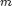 outputs. Let 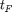 be the run time of that function for fixed and . According to AD theory the time needed to compute the full 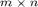 Jacobian matrix will take
inputs and 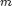 outputs. Let 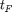 be the run time of that function for fixed and . According to AD theory the time needed to compute the full 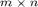 Jacobian matrix will take  when using the forward mode (FM) of AD. Using the two numerical methods FD and CV will result in times of the same order. On the other hand, using the reverse mode (RM) of AD will require
when using the forward mode (FM) of AD. Using the two numerical methods FD and CV will result in times of the same order. On the other hand, using the reverse mode (RM) of AD will require  , so the run time overhead does not depend on the number of inputs but on the number of outputs. More precisely, FM AD requires
, so the run time overhead does not depend on the number of inputs but on the number of outputs. More precisely, FM AD requires  for each derivative direction, which is equivalent to one Jacobian-vector product, while RM AD requires for each reverse derivative direction, equivalent to one vector-Jacobian product. The drawback of the RM is that it requires memory, which is needed for a stack of program values.
for each derivative direction, which is equivalent to one Jacobian-vector product, while RM AD requires for each reverse derivative direction, equivalent to one vector-Jacobian product. The drawback of the RM is that it requires memory, which is needed for a stack of program values.
Example function
Consider the very simple function fprod, that just calls prod on it's input.
type fprod
function z = fprod(a) z = myprod(a, 1);
Test the function
When the input is a vector, then the result will be a scalar.
x = (1:5).'; p = fprod(x)
p = 120
Compute the gradient
Now let's compute the gradient using ADiMat's AD drivers admDiffFor, admDiffVFor and admDiffRev.
adopts = admOptions();
adopts.functionResults = {p}; % for admDiffRev
[JF] = admDiffFor(@fprod, 1, x, adopts)
[Jf] = admDiffVFor(@fprod, 1, x, adopts)
[Jr] = admDiffRev(@fprod, 1, x, adopts)
JF = 120 60 40 30 24 Jf = 120 60 40 30 24 Jr = 120 60 40 30 24
Verify the gradient
Since the function in question is real analytic (because the argument is real), we can verify the derivative against the complex variable method, which is implemented in the admDiffComplex driver. This returns very precise results, but as you will see already from the output formatting, it does not return the exact same integer numbers that AD returns in this case. Also, because the function is simple enough, the three AD results are identical.
[Jc] = admDiffComplex(@fprod, 1, x) assert(norm(JF - Jc) ./ norm(JF) < 1e-13); assert(norm(Jf - Jc) ./ norm(JF) < 1e-13); assert(norm(Jr - Jc) ./ norm(Jr) < 1e-13); assert(isequal(JF, Jf)); assert(isequal(JF, Jr));
Jc = 120.0000 60.0000 40.0000 30.0000 24.0000
Measure the speed
Now let's run the gradient computations with random vectors of length increasing up to 1e4 and measure the run times. We impose a limit on the maximum runtime.
limit = 30; ns = ceil(logspace(1, 6)); times = nan(5, length(ns)); times(:,1) = 0; for i=1:length(ns) n = ns(i); x = rand(n, 1); if max(times(1,:)) < limit tic, p = fprod(x); times(1,i) = toc; end if max(times(2,:)) < limit tic, [J] = admDiffFor(@fprod, 1, x, adopts); times(2,i) = toc; end if max(times(3,:)) < limit tic, [J] = admDiffVFor(@fprod, 1, x, adopts); times(3,i) = toc; end if max(times(4,:)) < limit % Tell admDiffRev in advance what type the function's results will have. adopts.functionResults = {p}; tic, [J] = admDiffRev(@fprod, 1, x, adopts); times(4,i) = toc; end if max(times(5,:)) < limit tic, [J] = admDiffComplex(@fprod, 1, x); times(5,i) = toc; end end
Plot timing results
Let us now plot the results on a log-log scaled plot. As is customary in AD, we also compute the AD overhead factors, that is the time 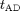 needed to compute the gradient divided by the time to compute the original function. According to AD theory this factor should be  for the FM and numerical differentiation, but 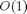 for the RM, i.e. with just a constant overhead that does not depend on the length of the gradient. To illustrate this we also plot the functions
for the FM and numerical differentiation, but 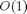 for the RM, i.e. with just a constant overhead that does not depend on the length of the gradient. To illustrate this we also plot the functions  and
and  .
.
figure plot(ns, times(2:5, :), '+', ns, times(1,:), '+'); set(gca, 'xscale', 'log'); set(gca, 'yscale', 'log'); xlabel('$n$', 'interpreter', 'latex'); ylabel('$t ({\rm s})$', 'interpreter', 'latex'); legends = {'admDiffFor', 'admDiffVFor', 'admDiffRev', 'admDiffComplex', 'fprod'}; legend(legends, 'location', 'best'); factors = times(2:5,:) ./ repmat(times(1,:), [4, 1]); figure plot(ns, factors, '+', ns, 100.*ones(length(ns),1), '-', ns, ns, '-'); set(gca, 'xscale', 'log'); set(gca, 'yscale', 'log'); xlabel('$n$', 'interpreter', 'latex'); ylabel('$t_{\rm AD} / t_F$', 'interpreter', 'latex'); legend({legends{1:4}, '100', 'n'}, 'location', 'best'); drawnow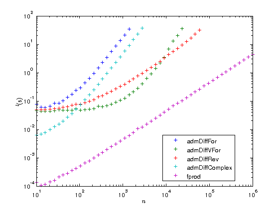 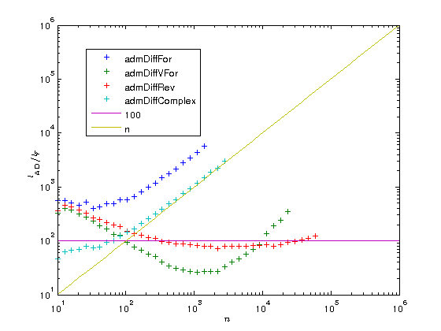
As you can see the overhead of the reverse mode is about 100. While this may seem a lot at first you have to consider two things:
- The function fprod has just one line and MATLAB's prod is a MEX function, while ADiMat's a_prod is an m-file. When your function is also an m-file, the overhead can become as low as 20 or even 10.
- The overhead is independent of , at some point the RM will become faster than all the other methods.
You can also see that for very small problems the driver functions require a very large amount of time compared to the original function. If you have problems of that type you should definitely consider to use the lower level interface of ADiMat and call the transformed functions directly, as it is explained in the documentation.
Modifying the test
When the input to fprod is a matrix, then the result will be a vector.
x = magic(3); p = fprod(x)
p =
96 45 84
Hence we are now computing a function mapping  inputs to outputs. Accordingly, computing the full Jacobian in FM should take
inputs to outputs. Accordingly, computing the full Jacobian in FM should take  times longer than the original function and in RM it should take times longer. Let's try this out.
times longer than the original function and in RM it should take times longer. Let's try this out.
ns = ceil(logspace(1, 4)); times = nan(5, length(ns)); times(:,1) = 0; for i=1:length(ns) n = ns(i); x = rand(n, n); if max(times(1,:)) < limit tic, p = fprod(x); times(1,i) = toc; end if max(times(2,:)) < limit tic, [J] = admDiffFor(@fprod, 1, x, adopts); times(2,i) = toc; end if max(times(3,:)) < limit tic, [J] = admDiffVFor(@fprod, 1, x, adopts); times(3,i) = toc; end if max(times(4,:)) < limit adopts.functionResults = {p}; tic, [J] = admDiffRev(@fprod, 1, x, adopts); times(4,i) = toc; end if max(times(5,:)) < limit tic, [J] = admDiffComplex(@fprod, 1, x); times(5,i) = toc; end end
Plot timing results
Let us now plot the results on a log-log scaled plot. This time we add to the derivative overhead plot the functions and 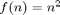, both of which appear in the loglog plot as straight lines with different slopes.
figure plot(ns, times(2:5, :), '+', ns, times(1,:), '+'); set(gca, 'xscale', 'log'); set(gca, 'yscale', 'log'); xlabel('$n$', 'interpreter', 'latex'); ylabel('$t ({\rm s})$', 'interpreter', 'latex'); legend(legends, 'location', 'best'); factors = times(2:5,:) ./ repmat(times(1,:), [4, 1]); figure plot(ns, factors, '+', ns, ns, '-', ns, ns.^2, '-'); set(gca, 'xscale', 'log'); set(gca, 'yscale', 'log'); xlabel('$n$', 'interpreter', 'latex'); ylabel('$t ({\rm s})$', 'interpreter', 'latex'); legend({legends{1:4}, 'n', 'n^2'}, 'location', 'southeast'); set(gca, 'ylim', [min(ns) max(ns)]);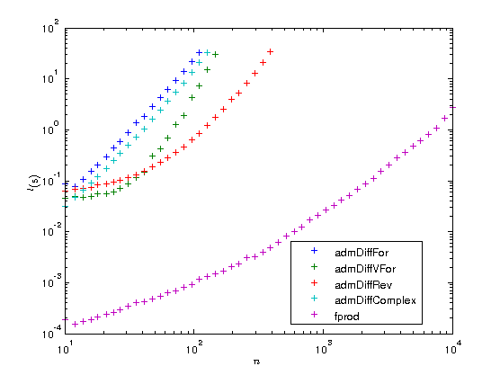

Published with ADiMat version
adimat_version(2)
ans = ADiMat 0.5.9-3636